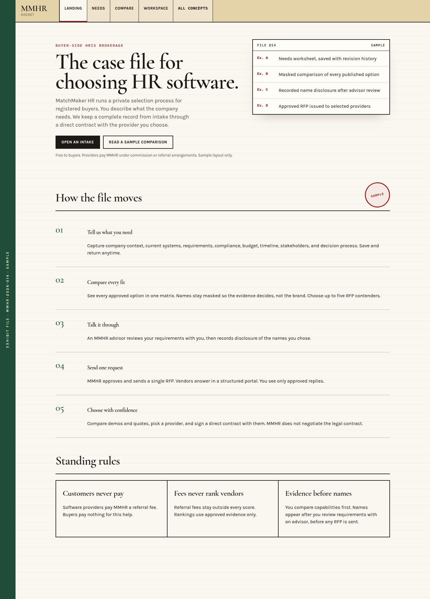
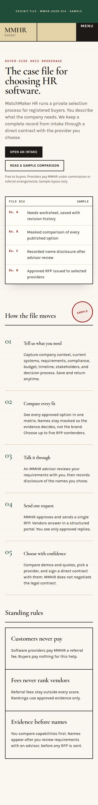
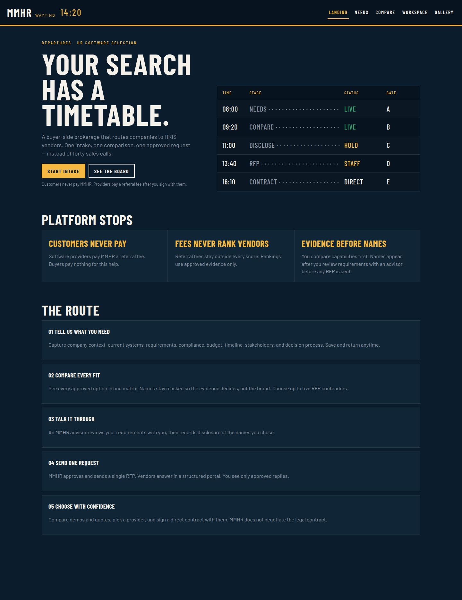
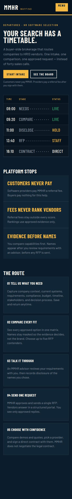
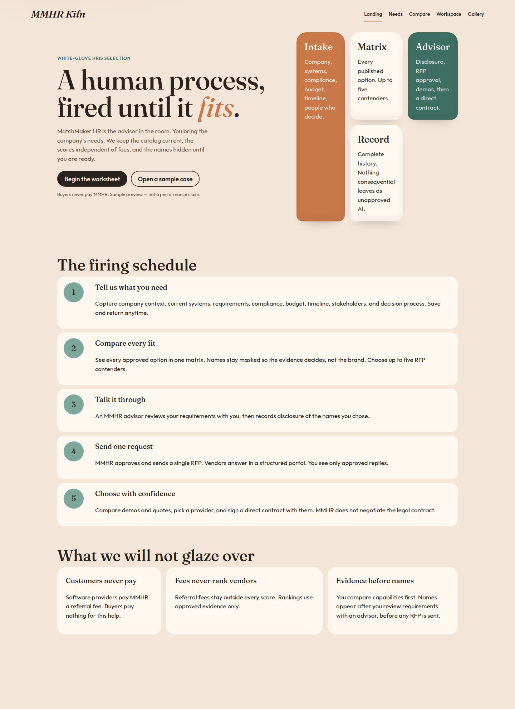
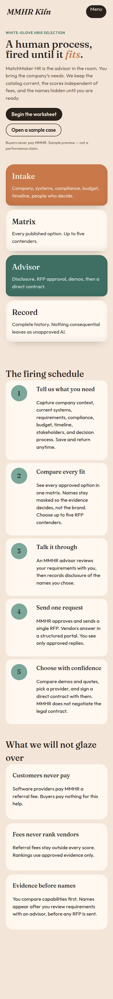
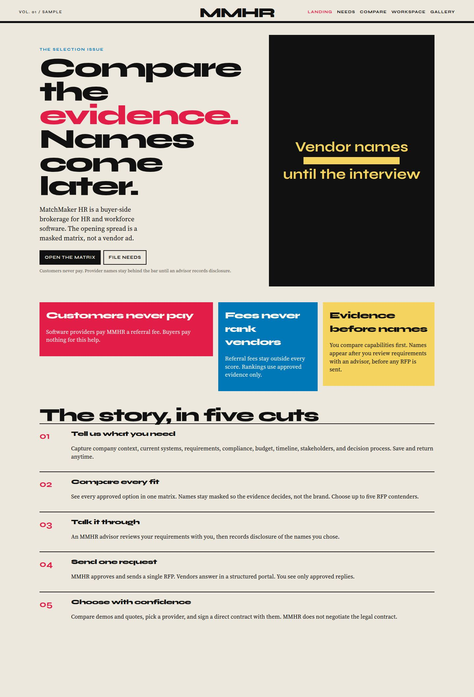
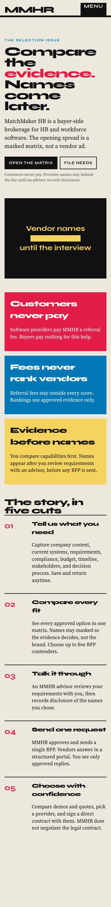
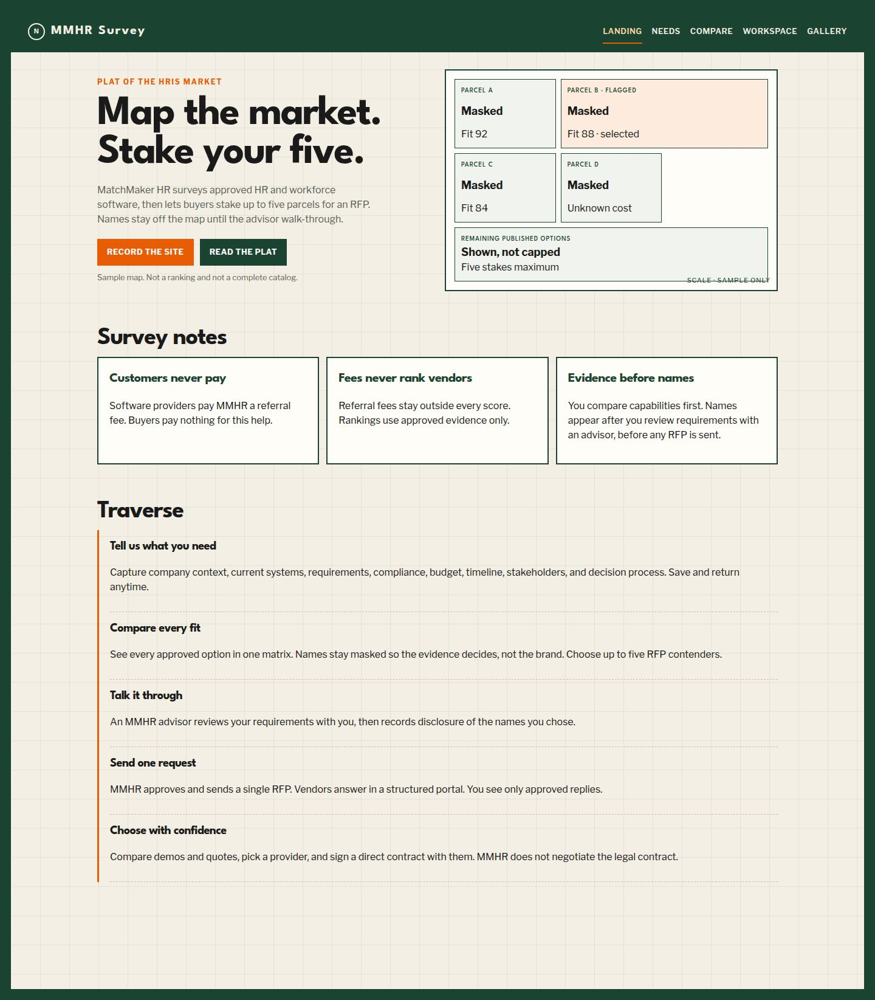
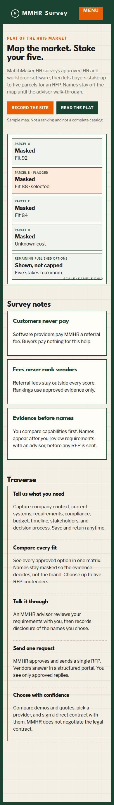

Concept 1
Docket
Records office. The selection is a case file: exhibit stamps, manila stock, a vertical docket rail.
Cormorant Garamond + Karla. Manila, ink, docket red, binder green.


MMHR · docs/design-concepts · sample only
Static HTML previews of MatchMaker HR, a buyer-side HRIS brokerage. Each concept uses the same product story from the PRD: free buyer intake, a masked comparison matrix of every published option, up to five RFP contenders, advisor disclosure, then an approved request. Open any screen on a phone or desktop. No build step.
Concept 1
Records office. The selection is a case file: exhibit stamps, manila stock, a vertical docket rail.
Cormorant Garamond + Karla. Manila, ink, docket red, binder green.


Concept 2
Transit operations. Stages read as departures. Sodium lamps on enamel, condensed type, a live board.
Barlow Condensed + Barlow. Night navy, sodium amber, enamel, signal green.


Concept 3
Ceramic studio. Soft tiles, human advisor voice, clay and celadon. White-glove without a private club.
Fraunces + Outfit. Biscuit, clay, soot, celadon glaze.


Concept 4
Editorial magazine. Crop marks, process color, and censor bars over vendor names until disclosure.
Syne + Source Serif 4. Newsprint, carbon, magenta, cyan, crop yellow.


Concept 5
Cadastral map. The market is a plat. Buyers stake up to five parcels. Forest border, orange flags, field-book type.
League Spartan + Libre Franklin. Cream, forest, survey orange, water blue.

